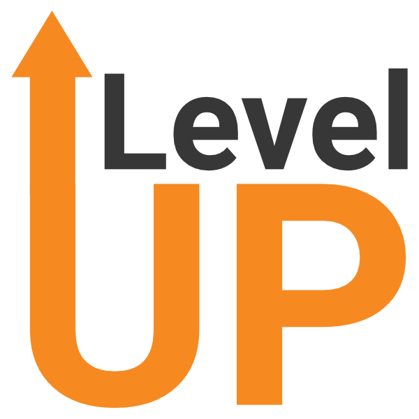

Education.
B.S, Honours. Computer Science.
- Courses: Programming for Mobile Computing, Web Development, Software Tools, Advanced Object-Oriented Programming, Fundamentals of Data Structures, Intro. to The Theory of Computatoin, Intro. to Logic for Computer Science,User Interface, Discrete Math, Calculus, Economics, Probabilities.
- Technical Skills: Java, Python, C, HTML, CSS, JavaScript, React.js, Node.js, ASP.NET, SQL, Unix/Linux, Git, REST, Bash, Microsoft Tools, Agile, AWS, Project Management, Power Automate, Power BI, Power Apps, Microsoft Azure.
Work Experience.
Software Engineer, Ontario Power Generation
- Built and maintained a full stack web app, implemented the frontend via Angular, ASP.NET. Created the backend using Node.js. Pushed metadata to MS Azure SQL Database and construct RESTful API.
- Developed a Power BI dashboard t analyze Observation and Coaching data for specific work group, providing insights into trends over time and focus areas, ultimately enhancing decision-making and performance improvement initiatives.
- Recognized as Employee of the Month for March, demonstrating outstanding commitment to company values and exceptional performance through the Values in Action program.

UI/UX Design & Software Engineer, Riipen Internship Program
- Mastered UI/UX design with Figma, creating wireframes and prototypes for Global Islamic Societys app.
- Transformed designs into functional app using React.js and Node.js, attracting hundreds of monthly users.

Software Engineer, Yrok University Robotics Society
- Used ROS, C++, Python to control the rover that teleoperates from up tp 1km away.

Software Engineer, Freelancer
- Interacted with various clients professionally to deliver software projects.
- Used Python to plot OHLC candlestick on top of an order book asks heatmap for forex currencies via Dash.

Co-Founder, Almawjah
- Used my eentrepreneurial skills to pitch a new clothing brand to my friends and family. Managed to gather a capital of 2,000 dollars.
- Designed and managed my own clothing brand during the pandemic via Shopify. The Return of Investment (ROI) was 25% which exceeded my expectations for my first side hustle
- Gained a deep understanding of customer satisfaction by delivering high-quality products to the customers while flourishing my brand reputation.
Extracurriculars & Awards
- Enrolled at various hackathons such as Bon Hacketit 2.0.
- Active member in Smile Foundation Organization & Muslim Student Association at York University.
- York University Entrance Scholarship.